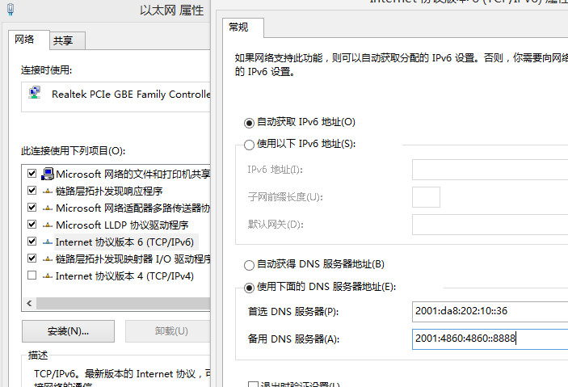

昨天宽带突然断掉了，弹出了Google Play中的一个软件的下载地址，竟然可以直接访问！！！赶紧打开Google竟然也可以访问
于是赶紧到控制台ping一下，发现地址竟然是ipv6格式的
正在 Ping www.google.com [2404:6800:4008:800::2004] 具有 32 字节的数据:
来自 2404:6800:4008:800::2004 的回复: 时间=127ms
来自 2404:6800:4008:800::2004 的回复: 时间=136ms
C:\windows\system32>ping www.youtube.com
正在 Ping youtube-ui-china.l.google.com [2404:6800:4008:800::200e] 具有 32 字节的数据:
来自 2404:6800:4008:800::200e 的回复: 时间=136ms
来自 2404:6800:4008:800::200e 的回复: 时间=133ms
上网查阅了一下发现：我国校园网有可靠的 IPv6 网络环境，速度非常快、稳定，并且大多数高校在网络流量计费时不会限制 IPv6 的流量，也就是免费的。同时GFW好像没有封ipv6的地址
于是又找了几个支持ipv6的网站试了一下好像都可以访问,比如说维基百科，youtube，Facebook以及Google的全套服务
如何访问更多的ipv6网站
那么问题来了，下如何访问更多的ipv6网站呢？当然是通过DNS服务器了
一些网站时支持ipv6访问的，然而用学校的DNS解析不出来真正的地址，所以只需要使用自己定义的DNS地址即可
在网上搜到了一些ipv6的DNS服务器，只需要把它配置到以太网的ipv6的自定义DNS中，同时要取消ipv4的访问（这时你将无法访问校园网的 IPv4 网关，同时所有流量都在 IPv6 通道上）
但是取消掉ipv4的访问时，出现了宽带连接702错误，没办法只能把DNS设置在以太网上，同时也只能断网的情况下访问了，这样断网的情况下可访问的ipv6网站就变多了
# 北京邮电大学DNS服务器
2001:da8:202:10::36
2001:da8:202:10::37
# Google的ipv6DNS服务器
google-public-dns-a.google.com 2001:4860:4860::8888 8.8.8.8
google-public-dns-b.google.com 2001:4860:4860::8844 8.8.4.4
ping一下这些服务器，找一些速度比较快的设置一下即可访问更多的ipv6网站（前期是网站支持）

如何在宽带连接的情况下访问ipv6网站
毕竟ipv4的网站还是大多数，我们日常使用的网站都是通过ipv4来访问的
所以还是要连接宽带，但是这时候再ping会发现访问Google时访问的是被墙的那个地址
C:\windows\system32>ping www.google.com
正在 Ping www.google.com [93.46.8.89] 具有 32 字节的数据
为解决上述问题只需要把ipv6的地址写入的hosts文件中即可
127.0.0.1 localhost
# google ipv6
2404:6800:4008:800::2004 www.google.com
# 这个是啥网站
2400:cb00:2048:1::6819:1f70 t66y.com
配置好之后，你会发现在连接到宽带的情况下可以访问被墙的Google了。所以只要把一些常用的ipv6网站配置到你的hosts文件中即可，不过比较麻烦的是配置文件不支持通配符的格式
利用NAT64/DNS64技术
可以将 IPv4 地址对应的转换为 IPv6 地址，相当于指引向 IPv6 流量，相当于一种代理。它还可以实现 IPv4 和 IPv6 协议的互访
其实现的主要诀窍就是添加其为 DNS 服务器，并在本地停用 IPv4 协议。步骤和上面添加DNS一样。不过这里添加的DNS并不是简单的DNS服务器，可以把它理解为一个代理服务器
此方案虽然可以纯粹使用 IPv6 网络并且免流量，但仍然存在一些不足。例如，访问国内部分网站时因为带宽等的限制会不如之前那么快。并且去哪找这些NAT64/DNS64的地址，网上公布的一些都用不了